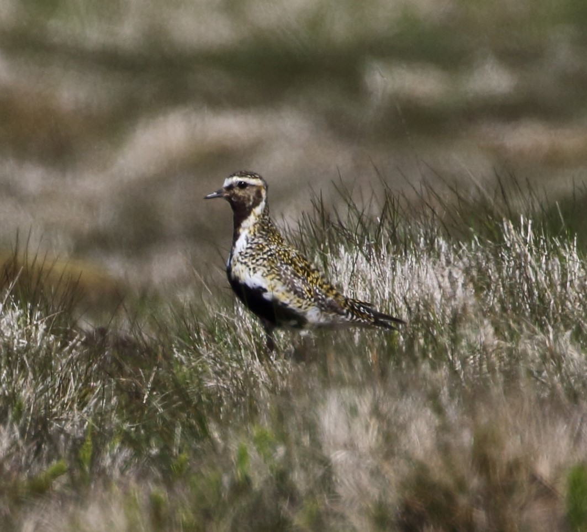

Pluvialis apricaria
Identity and identification
European Golden Plover, also called Eurasian Golden Plover, is الزقزاق المذهب الأوراسي in Arabic and Pluvier doré in French. Pluvialis apricaria belongs to Charadriidae, order Charadriiformes. About 28 cm long, it has a relatively stocky body, short bill and finely gold-spangled back. “Golden” does not mean uniformly yellow: the appearance of the speckling changes with light, distance and feather condition.
Breeding birds have black on the face and underparts, bordered laterally by white; winter underparts are paler. Juveniles resemble winter adults, so absence of black does not determine age. Pacific Golden Plover is an important regional comparison: European Golden Plover is stockier, with shorter bill and legs, and white underwings rather than grey-brown. Grey Plover shows black axillaries. Document these characters when visible naturally, without forcing flight.
Habitat, food and behaviour
Breeding habitat includes northern open landscapes, tundra and uplands with short vegetation. Outside breeding, it uses grassland, pasture, farmland and steppe, sometimes near coasts. Unlike the stereotypical waterside wader, it may be far from open water: damp ground suitable for feeding can matter more than an obvious shoreline.
It takes terrestrial invertebrates, including worms and insects, watching, pausing and moving quickly to pick prey. Large flocks may gather, sometimes alongside lapwings or other field birds according to locality. Frozen ground and soil conditions affect access to food, so its winter distribution is not fixed. Feeding and resting places work together, and a flock can move between them without leaving the wider area.
Breeding and development
Nests are on the ground and the eggs blend with surrounding vegetation and material. BTO gives a typical clutch of four, incubation of 28–31 days, and flight at about 25–33 days after hatching. Chicks are downy and mobile early, but cannot fly during their first weeks.
These intervals describe breeding within the northern range. They do not imply nesting in every winter destination, nor should British egg-laying dates become an assumed Arab breeding calendar. Distinguishing breeding and winter ranges explains why it appears in Arab farmland as northern temperatures fall.
Range and Arab occurrence
The breeding range extends from parts of northern Europe into northwestern Asia. Winter movements reach western and southern Europe, the Mediterranean and North Africa. The 2026 Lebanon guide lists a scarce passage migrant and common winter visitor in grassland, steppe and coastal habitats. Oman lists a rare passage migrant and winter visitor, making separation from Pacific Golden Plover particularly important. Tracking of birds breeding in Swedish Lapland documented some winter movements to Iberia or Morocco associated with cold spells. This confirms Morocco as a winter movement destination, not as the destination of every population. Kuwait’s rarities committee list instead treats it as a vagrant, rather than a regular winter visitor.
What November means
November is suitable for searching established winter areas, but the month does not guarantee a bird in every field or country. Record numbers, ground conditions, weather and flock behaviour. An increase after cold weather may reflect arrivals; movement within a plain may simply connect feeding and resting places. Differences between two days do not establish a long-term population trend.
Conservation and responsible observation
Its global category is Least Concern (LC). Local pressures nevertheless include illegal hunting, habitat degradation and severe weather, as the Lebanon guide notes. Keep far enough away for feeding to continue, and avoid walking directly towards resting flocks. A telescope and existing routes reduce disturbance. Protecting suitable open wet ground and pasture helps winter survival even where a site does not resemble a conventional marsh.
References
British Trust for Ornithology — BirdFacts: Golden Plover; UNDP / ABCL / Ministry of Environment — Birds of Lebanon, second edition, 2026, p. 142; Oman Birds Rarities Committee — Official Bird List, seasonal table; Machín and colleagues — Individual migration patterns of Eurasian golden plovers breeding in Swedish Lapland: examples of cold spell-induced winter movements, 2015; RSPB — Birds on The Wash, Golden Plover; Kuwait Ornithological Rarities Committee / AbdulRahman Al-Sirhan — Annotated Arabic checklist, 20 September 2026.
Illustrative species photograph: nickajacket, iNaturalist, CC0 1.0.